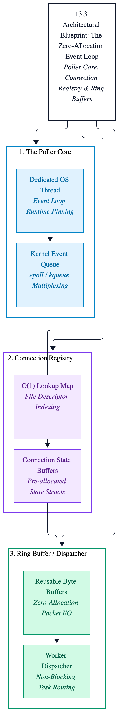
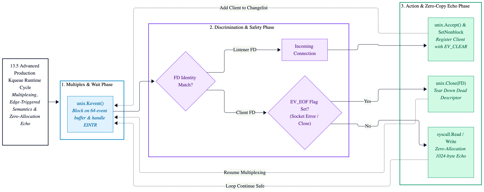

Chapter 13: Low-Level Event Loops (epoll & kqueue)
Modern high-performance systems engineering requires mastering direct operating system event notification primitives. While Go's standard library netpoller is exceptionally engineered for general-purpose applications, ultra-low-latency workloads, high-frequency trading gateways, and custom message brokers demand complete control over file descriptor lifecycles, memory reuse, and event notification dispatching.
This chapter deconstructs direct OS-level multiplexing using epoll on Linux and kqueue on macOS,
walking through production-grade, zero-allocation event loop skeletons implemented via raw system calls.
Chapter Objectives
- Deconstruct the limitations of Go's runtime network poller (
netpoller) for ultra-low-latency workloads. - Master direct operating system event notification primitives:
epollon Linux andkqueueon macOS. - Implement a high-performance, non-blocking, edge-triggered network event loop from scratch using raw system calls.
- Enforce strict zero-allocation memory constraints during high-throughput file descriptor multiplexing.
13.1 Introduction: Why Bypass Go's Net Poller?
Go’s standard library netpoller (internal/poll) is a masterpiece of runtime engineering. It transparently converts
blocking network operations into cooperative goroutine yields, allowing developers to write straightforward synchronous-looking
code while achieving asynchronous I/O performance.
However, at extreme scale handling millions of concurrent connections, sub-millisecond tail latencies (p99.9),
or custom protocol parsing engines, Go's runtime scheduler overhead, goroutine allocation costs, and hidden synchronization
primitives introduce bottlenecks.
For infrastructure daemons, custom message brokers, and high-frequency trading gateways, senior systems engineers must bypass the standard library abstractions entirely. By interfacing directly with kernel-level multiplexing subsystems, we gain deterministic control over file descriptor lifecycles, memory reuse, and event notification dispatching.
13.2 Operating System Primitives: Linux vs. macOS
To build cross-platform systems supporting both Linux and macOS, we must bridge the architectural differences between their underlying event notification mechanisms:
| Feature | Linux (epoll) | macOS (kqueue) |
|---|---|---|
| System Call Interface | epoll_create1, epoll_ctl, epoll_wait |
kqueue, kevent |
| Trigger Modes | Level-triggered & Edge-triggered (EPOLLET) |
Event-driven (automatic edge/one-shot via EV_CLEAR) |
| Descriptor Scope | File descriptors only (fd) |
Generic kernel objects (Sockets, VFS, Signals, Timers) |
| Complexity | Explicit flag management for state | Unified filter flags (EVFILT_READ, EVFILT_WRITE) |
13.3 Architectural Blueprint: The Zero-Allocation Event Loop
A production-grade event loop consists of three primary components:
- The Poller Core: A dedicated OS thread managing the kernel event queue.
- The Connection Registry: An O(1) lookup map or flat array binding file descriptors to connection state buffers.
- The Ring Buffer / Worker Dispatcher: Reusable byte buffers that eliminate garbage collector pressure during packet reads and writes.
Figure 13.3: Event Loop Architecture

13.4 Production Code: Low-Level Epoll Loop Skeleton (Linux)
The following implementation demonstrates how to initialize an epoll instance, register a non-blocking
socket listener, and run an edge-triggered event loop using Go's golang.org/x/sys/unix package.
//go:build linux
package main
import (
"fmt"
"log"
"net"
"os"
"syscall"
"golang.org/x/sys/unix"
)
func main() {
// 1. Create a non-blocking TCP listener socket.
tcpListener, bindError := net.Listen("tcp", "0.0.0.0:8080")
if bindError != nil {
log.Fatalf("failed to bind listener: %v", bindError)
}
defer tcpListener.Close()
// Extract raw file descriptor from net.Listener.
tcpListenerConcrete, isTcpListener := tcpListener.(*net.TCPListener)
if !isTcpListener {
log.Fatalf("expected TCPListener")
}
listenerFile, fileError := tcpListenerConcrete.File()
if fileError != nil {
log.Fatalf("failed to get listener file descriptor: %v", fileError)
}
defer listenerFile.Close()
listenerFileDescriptor := int(listenerFile.Fd())
// Set socket to non-blocking mode.
if nonBlockError := syscall.SetNonblock(listenerFileDescriptor, true); nonBlockError != nil {
log.Fatalf("failed to set non-blocking: %v", nonBlockError)
}
// 2. Create epoll instance via epoll_create1.
epollInstanceFileDescriptor, epollCreateError := unix.EpollCreate1(0)
if epollCreateError != nil {
log.Fatalf("failed to create epoll instance: %v", epollCreateError)
}
defer unix.Close(epollInstanceFileDescriptor)
// 3. Register listener fd with epoll for read events (Edge-Triggered).
listenerEpollEvent := unix.EpollEvent{
Events: unix.EPOLLIN | unix.EPOLLET,
Fd: int32(listenerFileDescriptor),
}
if epollCtlError := unix.EpollCtl(epollInstanceFileDescriptor, unix.EPOLL_CTL_ADD, listenerFileDescriptor, &listenerEpollEvent); epollCtlError != nil {
log.Fatalf("failed to add listener to epoll: %v", epollCtlError)
}
log.Printf("Systems Event Loop initialized on [Linux epoll]. Listening on :8080...")
// 4. Event Loop Execution Buffer.
triggeredEventsSlice := make([]unix.EpollEvent, 64)
for {
triggeredEventCount, waitError := unix.EpollWait(epollInstanceFileDescriptor, triggeredEventsSlice, -1)
if waitError != nil {
if waitError == syscall.EINTR {
continue
}
log.Printf("epoll_wait error: %v", waitError)
break
}
for index := 0; index < triggeredEventCount; index++ {
currentFileDescriptor := int(triggeredEventsSlice[index].Fd)
if currentFileDescriptor == listenerFileDescriptor {
// Accept incoming connections.
incomingConnectionFileDescriptor, _, acceptError := unix.Accept(listenerFileDescriptor)
if acceptError != nil {
if acceptError == syscall.EWOULDBLOCK {
continue
}
log.Printf("accept error: %v", acceptError)
continue
}
if connNonBlockError := syscall.SetNonblock(incomingConnectionFileDescriptor, true); connNonBlockError != nil {
log.Printf("failed to set conn non-blocking: %v", connNonBlockError)
unix.Close(incomingConnectionFileDescriptor)
continue
}
// Register client connection to epoll.
clientEpollEvent := unix.EpollEvent{
Events: unix.EPOLLIN | unix.EPOLLET | unix.EPOLLRDHUP,
Fd: int32(incomingConnectionFileDescriptor),
}
if clientEpollError := unix.EpollCtl(epollInstanceFileDescriptor, unix.EPOLL_CTL_ADD, incomingConnectionFileDescriptor, &clientEpollEvent); clientEpollError != nil {
log.Printf("failed to add client to epoll: %v", clientEpollError)
unix.Close(incomingConnectionFileDescriptor)
continue
}
fmt.Printf("[+] Accepted new connection on FD %d\n", incomingConnectionFileDescriptor)
} else {
// Handle client I/O events.
handleClientIO(epollInstanceFileDescriptor, currentFileDescriptor)
}
}
}
}
func handleClientIO(epollInstanceFileDescriptor int, targetFileDescriptor int) {
ioBuffer := make([]byte, 1024)
bytesReadCount, readError := syscall.Read(targetFileDescriptor, ioBuffer)
if readError != nil || bytesReadCount <= 0 {
if readError != syscall.EWOULDBLOCK {
fmt.Printf("[-] Closing connection on FD %d (err: %v)\n", targetFileDescriptor, readError)
unix.EpollCtl(epollInstanceFileDescriptor, unix.EPOLL_CTL_DEL, targetFileDescriptor, nil)
syscall.Close(targetFileDescriptor)
}
return
}
// Echo data back (Zero-allocation socket write path).
_, _ = syscall.Write(targetFileDescriptor, ioBuffer[:bytesReadCount])
}13.5 Production Code: Low-Level Kqueue Loop Skeleton (macOS)
While Linux relies on epoll, macOS and BSD-derived kernels utilize kqueue. Unlike epoll,
which separates control configuration (epoll_ctl) from polling (epoll_wait), kqueue provides
a unified system call (kevent) that handles both subscription registrations and event dispatching through shared
changelist and eventlist buffers.
The following implementation mirrors our Linux epoll skeleton, targeting macOS via the golang.org/x/sys/unix package
using edge-triggered semantics (unix.EV_CLEAR):
//go:build darwin
package main
import (
"fmt"
"log"
"net"
"os"
"syscall"
"golang.org/x/sys/unix"
)
func main() {
// 1. Create a non-blocking TCP listener socket.
tcpListener, bindError := net.Listen("tcp", "0.0.0.0:8080")
if bindError != nil {
log.Fatalf("failed to bind listener: %v", bindError)
}
defer tcpListener.Close()
// Extract raw file descriptor from net.Listener.
tcpListenerConcrete, isTcpListener := tcpListener.(*net.TCPListener)
if !isTcpListener {
log.Fatalf("expected TCPListener")
}
listenerFile, fileError := tcpListenerConcrete.File()
if fileError != nil {
log.Fatalf("failed to get listener file descriptor: %v", fileError)
}
defer listenerFile.Close()
listenerFileDescriptor := int(listenerFile.Fd())
// Set socket to non-blocking mode.
if nonBlockError := syscall.SetNonblock(listenerFileDescriptor, true); nonBlockError != nil {
log.Fatalf("failed to set non-blocking: %v", nonBlockError)
}
// 2. Create kqueue instance.
kqueueFileDescriptor, kqueueCreateError := unix.Kqueue()
if kqueueCreateError != nil {
log.Fatalf("failed to create kqueue instance: %v", kqueueCreateError)
}
defer unix.Close(kqueueFileDescriptor)
// 3. Register listener file descriptor with kqueue for read events.
changeListSlice := []unix.Kevent_t{
{
Ident: uint64(listenerFileDescriptor),
Filter: unix.EVFILT_READ,
Flags: unix.EV_ADD | unix.EV_ENABLE,
Fflags: 0,
Data: 0,
Udata: nil,
},
}
// Apply initial registration change via kevent.
if _, keventSetupError := unix.Kevent(kqueueFileDescriptor, changeListSlice, nil, nil); keventSetupError != nil {
log.Fatalf("failed to register listener with kqueue: %v", keventSetupError)
}
log.Printf("Systems Event Loop initialized on [macOS kqueue]. Listening on :8080...")
// 4. Event Loop Execution Buffer.
triggeredEventsSlice := make([]unix.Kevent_t, 64)
emptyChangeListSlice := []unix.Kevent_t{}
for {
triggeredEventCount, waitError := unix.Kevent(kqueueFileDescriptor, emptyChangeListSlice, triggeredEventsSlice, nil)
if waitError != nil {
if waitError == syscall.EINTR {
continue
}
log.Printf("kevent wait error: %v", waitError)
break
}
for index := 0; index < triggeredEventCount; index++ {
currentEvent := triggeredEventsSlice[index]
currentFileDescriptor := int(currentEvent.Ident)
// Check for socket errors or EOF flags.
if (currentEvent.Flags & unix.EV_EOF) != 0 {
fmt.Printf("[-] Connection EOF or error on FD %d\n", currentFileDescriptor)
unix.Close(currentFileDescriptor)
continue
}
if currentFileDescriptor == listenerFileDescriptor {
// Accept incoming connections.
incomingConnectionFileDescriptor, _, acceptError := unix.Accept(listenerFileDescriptor)
if acceptError != nil {
if acceptError == syscall.EWOULDBLOCK {
continue
}
log.Printf("accept error: %v", acceptError)
continue
}
if connNonBlockError := syscall.SetNonblock(incomingConnectionFileDescriptor, true); connNonBlockError != nil {
log.Fatalf("failed to set conn non-blocking: %v", connNonBlockError)
unix.Close(incomingConnectionFileDescriptor)
continue
}
// Register client connection to kqueue with edge-like behavior (EV_CLEAR).
clientChangeListSlice := []unix.Kevent_t{
{
Ident: uint64(incomingConnectionFileDescriptor),
Filter: unix.EVFILT_READ,
Flags: unix.EV_ADD | unix.EV_ENABLE | unix.EV_CLEAR,
Fflags: 0,
Data: 0,
Udata: nil,
},
}
if _, clientKeventError := unix.Kevent(kqueueFileDescriptor, clientChangeListSlice, nil, nil); clientKeventError != nil {
log.Fatalf("failed to add client to kqueue: %v", clientKeventError)
unix.Close(incomingConnectionFileDescriptor)
continue
}
fmt.Printf("[+] Accepted new connection on FD %d\n", incomingConnectionFileDescriptor)
} else {
// Handle client I/O events.
handleClientIO(kqueueFileDescriptor, currentFileDescriptor)
}
}
}
}
func handleClientIO(kqueueFileDescriptor int, targetFileDescriptor int) {
ioBuffer := make([]byte, 1024)
bytesReadCount, readError := syscall.Read(targetFileDescriptor, ioBuffer)
if readError != nil || bytesReadCount <= 0 {
if readError != syscall.EWOULDBLOCK {
fmt.Printf("[-] Closing connection on FD %d (err: %v)\n", targetFileDescriptor, readError)
unix.Close(targetFileDescriptor)
}
return
}
// Echo data back (Zero-allocation socket write path).
_, _ = syscall.Write(targetFileDescriptor, ioBuffer[:bytesReadCount])
}Figure 13.5: macOS 13.5 Kqueue Loop Architecture

Key Takeaways
- Kernel Multiplexing Control: Bypassing Go's netpoller grants fine-grained control over descriptor states, buffer lifecycles, and synchronization overhead in ultra-low-latency environments.
-
Linux Epoll Mechanics: Combines
epoll_create1,epoll_ctl, andepoll_waitwith Edge-Triggered (EPOLLET) semantics for high-performance notification dispatch. -
macOS Kqueue Mechanics: Utilizes unified
keventchangelist and eventlist buffers to manage both subscriptions and event notifications across generic kernel objects. - Zero-Allocation Discipline: Reusing event slices and byte buffers prevents garbage collection spikes on high-throughput network hot paths.